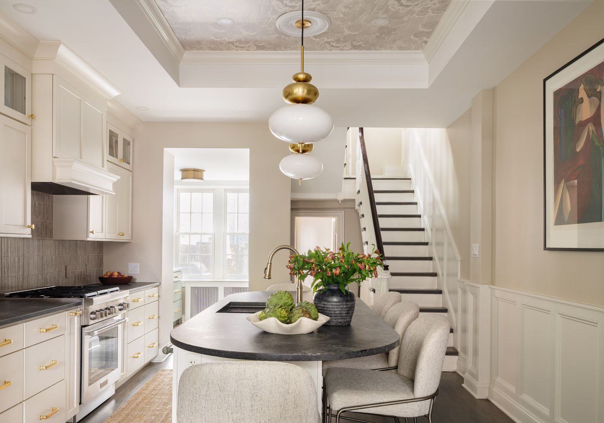
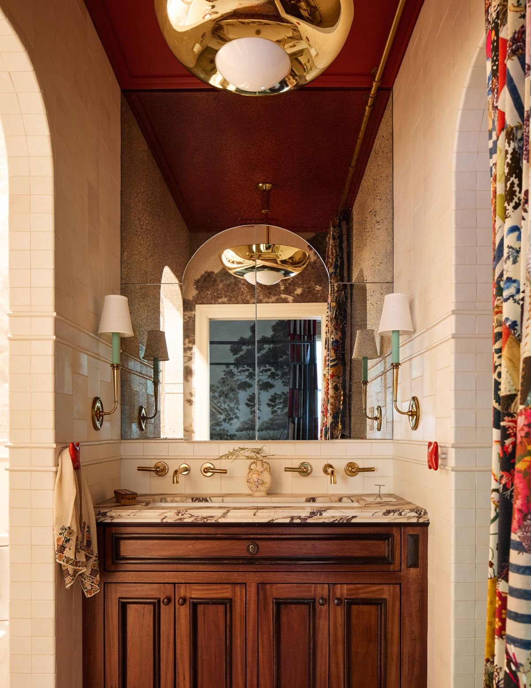

Bellweather 2026 Project Planning Guide
Partners in Joyful Living
At Bellweather Design-Build, remodeling is more than construction—it’s a partnership. Since 2002, we’ve built trust through thoughtful design, skilled craftsmanship, and clear communication.


An overview of the early steps, project comparisons, and timeline expectations to help you understand how your goals align with Bellweather’s process.
Next Steps
- Step 1:
- Introductory Call
- Step 2:
- Discovery Call
- Step 3:
- Home Consultation (free, if recommended)
- Step 4:
- Scope Review & Preliminary Estimates (free)
- Step 5:
- Proceed to Initial Design ($10k)
Project Comparisons (2024-2025)
- Kitchen Remodels: $165K - $425K
- Bathroom Remodels: $100K - $248K
- Whole-Home Renovations: $400K – $910K
- Home Additions: $250K – $970K
- Basements: $178K - $224K

Timeline Expectations
From design through construction, many projects are completed in roughly 12 months, depending on scope.
- Months 0-2:
- Initial Design
- Months 3-6:
- Plan Detailing & Selections
- Months 7-8:
- Logistics & Pre-Construction
- Months 9-12:
- Construction, Project Closeout & Warranty
